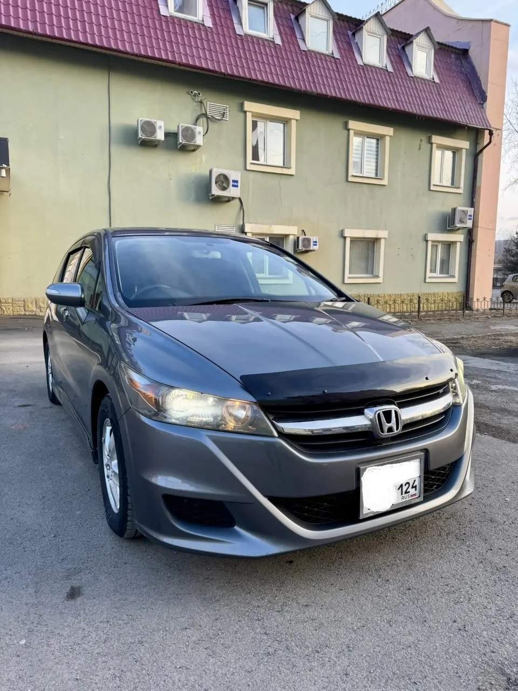

в день оформления
Honda Stream
2010
Семиместный семейный универсал с экономичным двигателем 1.8 л и проверенной автоматической коробкой.
- Год выпуска
- 2010
- Пробег
- 61 834 км
- Кузов
- Универсал
- Двигатель
- 1.8 л
- Мощность
- 140 л.с.
- Коробка
- АКПП
- Привод
- Передний
- Руль
- Правый
Условия рассрочки
Предварительное решение — за 1 час. Подтверждение дохода не требуется.
Этот автомобиль
может стать вашим
Без банковской заявки, справок о доходах и долгого ожидания. Вы выбираете автомобиль — мы проверяем его, выкупаем и оформляем договор.
- 01Первый взнос от 25%
Для этой Honda Stream — от 322 500 ₽.
- 02Срок от 12 до 36 месяцев
Выберите комфортный ежемесячный платёж.
- 03Стаж вождения от 3 лет
Гражданство РФ и индивидуальное рассмотрение заявки.
- 04Юридическая проверка
Проверяем автомобиль, документы и продавца до оплаты.
Понятная покупка.
Прозрачная сделка.
Если банк отказал в кредите, требует подтверждение дохода или вы просто не хотите разбираться в сложном банковском оформлении — S-AUTO поможет приобрести автомобиль напрямую в рассрочку.
Вы можете уехать на выбранной машине в день оформления. Все условия фиксируются в договоре, а досрочное погашение доступно без лишней бюрократии.
Запишитесь
на просмотр
Красноярск, ул. 78 Добровольческой бригады, 14Б, офис 63
ПН–ПТ · 10:00–18:00